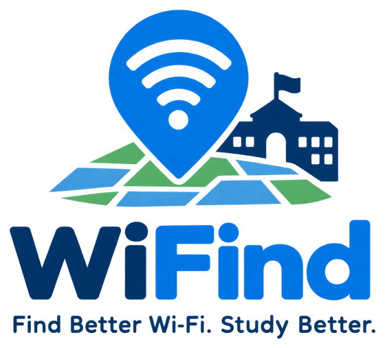

Where should you go online?
Pick what you need to do. WiFind ranks every spot on campus by the connection that task needs and how far you would walk.
What will you do?
Where are you now?
When?
Top spots
Check the Wi‑Fi where you are
Run a quick test on your phone or laptop, then report the spot so other students know before they walk over.
Report this spot
A report takes ten seconds and helps the next student decide where to sit.
Latest reports
0 reportsYour recent tests
Strong spots, dead zones and outages
WiFind keeps an eye on the campus and tells you where the Wi-Fi is strong, where to avoid, and when a spot you follow changes.
Notify me about
Spots you follow
Alerts appear inside WiFind while it is open.
Why is Wi‑Fi strong in one spot and weak in another?
Drag the phone around this sample floor, or move the access point. Watch how distance, walls, crowds and the Wi-Fi band change what you get.
Six things that decide your Wi-Fi
Reading the numbers
About WiFind

Students have difficulty identifying areas on campus with high ping or unstable Wi-Fi connections.
If students know which areas have weak Wi-Fi before they settle in, they can choose a spot with better connectivity and save time.
Students of the Technological Institute of the Philippines, Quezon City campus, who use the campus Wi-Fi.
Find a reliable connection before starting online classes, research, or submitting requirements.
What students told us
Kailan po kaya magkaka wifi sa bldng 9, di kami maka access ng canva namin. Pano mag aaral nyan sa exam?"When will Bldg 9 get Wi-Fi? We can't open Canva. How do we study for the exam?"
May problema ba internet sa TIP Q.C. mahal mahal ng bayad tas di naman consistent yung wifi."Is something wrong with the internet at TIP QC? Tuition is expensive, but the Wi-Fi isn't consistent."
The team
WiFind is a TECH 101 student prototype and is not an official T.I.P. service. The campus layout follows the T.I.P. QC Supreme Student Council campus map; floor counts are estimates. Spot readings are sample data until students send speed tests.